← All Projects

Peg Lab Plinko!
An interactive STEM learning toy for 4th and 5th graders — designed, fabricated, and programmed end-to-end by a 4-person team I co-led for Cornerstone of Engineering 2.
An interactive STEM learning toy for 4th and 5th graders — designed, fabricated, and programmed end-to-end by a 4-person team I co-led for Cornerstone of Engineering 2.
The brief: design a STEM learning toy that 4th and 5th graders would actually want to play with, and that could teach something along the way. Our team landed on Peg Lab Plinko! — a Plinko-style board where the peg layout and lighting respond to player input, turning the classic dropped-puck mechanic into a small physics lesson. Two teams take turns placing pegs to build strategic routes, then launch balls with spring-loaded launchers trying to land in LED-lit target wells. The electronics — a SparkFun RedBoard, photoresistors, and color-coded LEDs — automate scoring and randomize targets each round. The toy came in at $47.08 (well under the $100 budget), survived two live showcases with only two pegs breaking, and the classroom teacher asked to keep it.
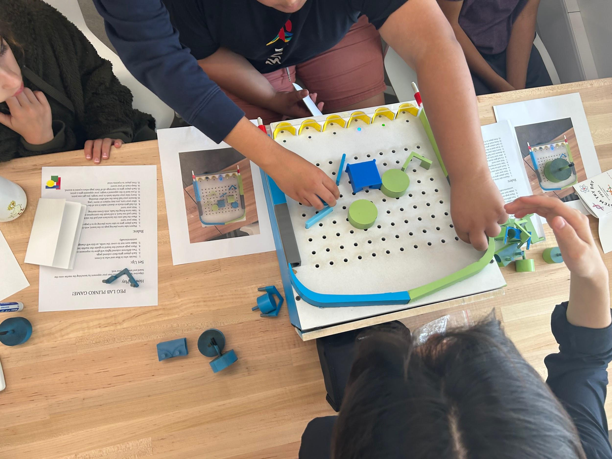
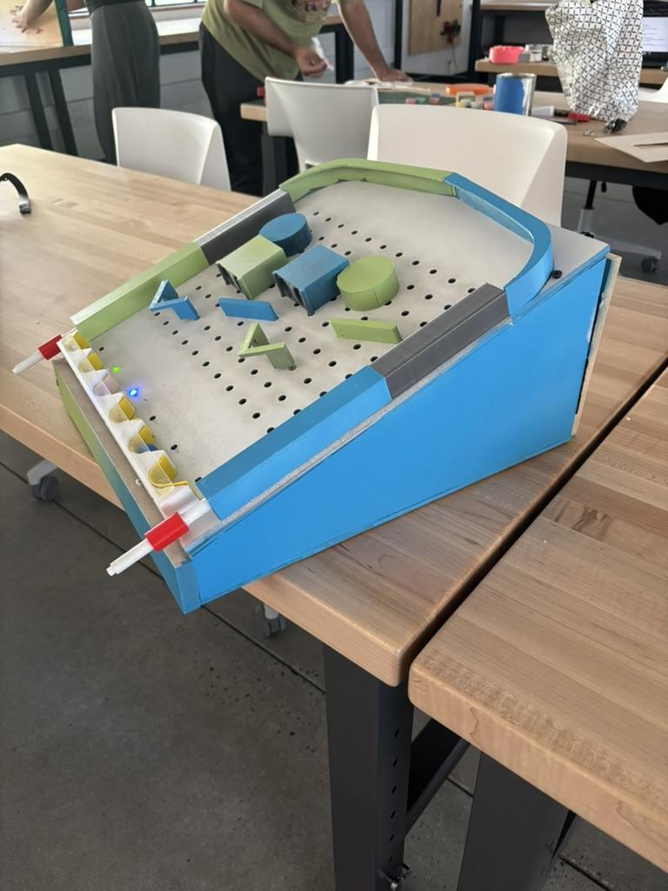
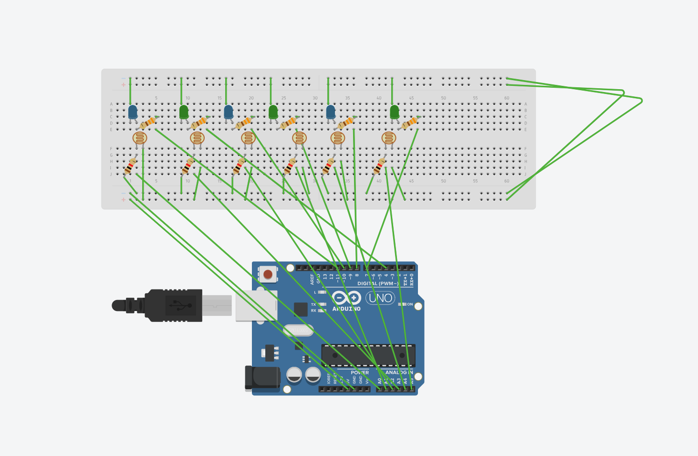
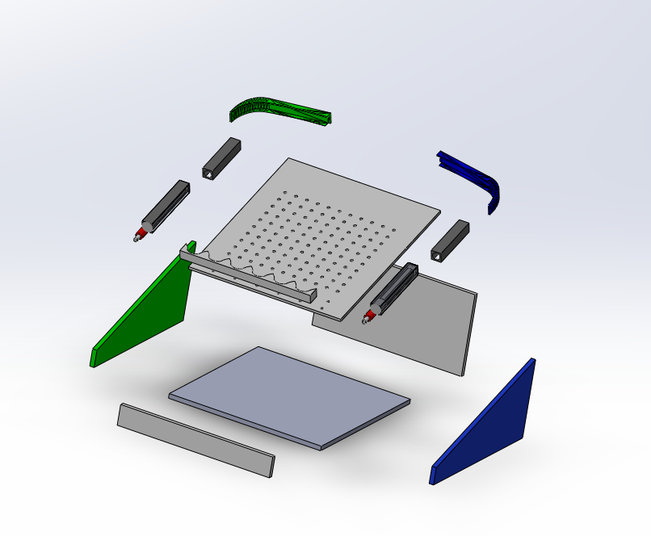
The project moved through five milestones over the semester — from problem framing and cardboard prototyping to a fully functional, painted, and wired final product. Each milestone ended with a design review where the team presented progress and incorporated feedback.
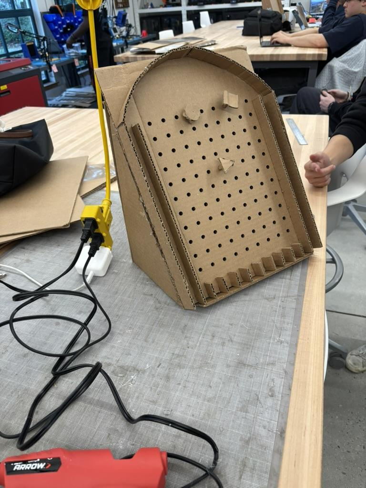
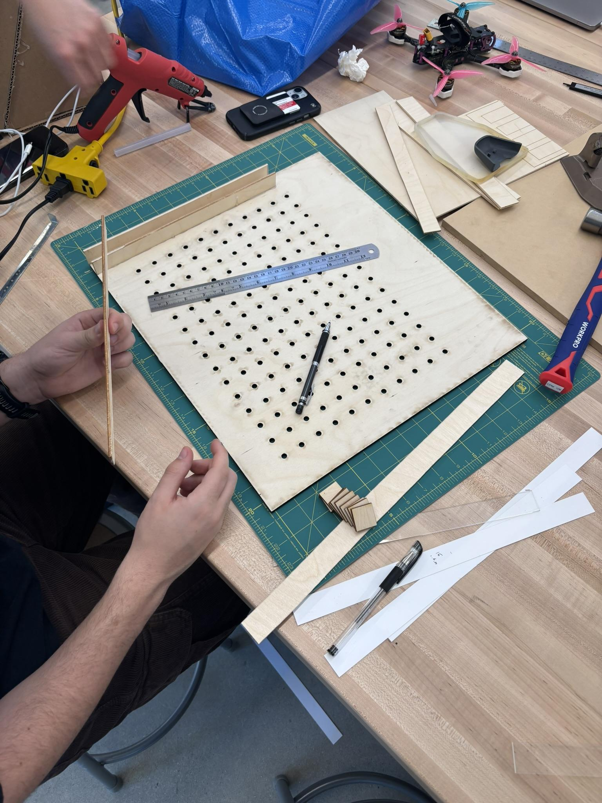
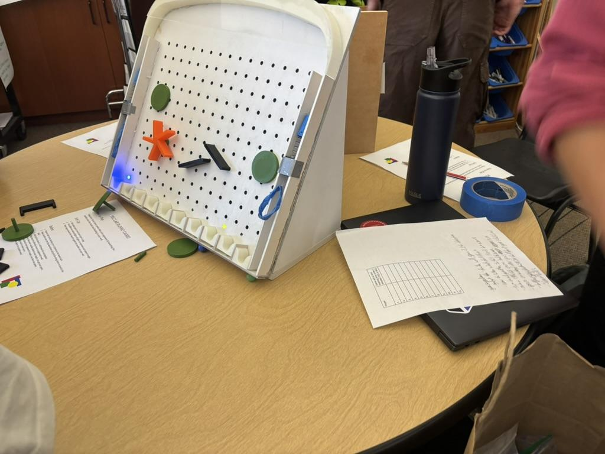

Cardboard concept → first laser-cut build → user testing with MCCS students → final painted product.
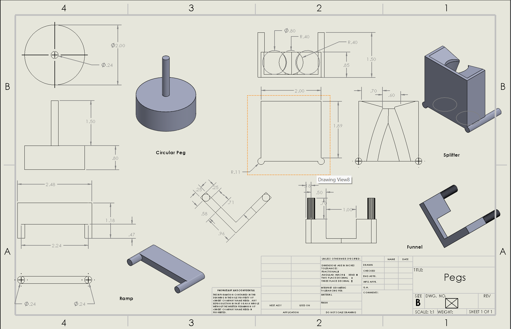
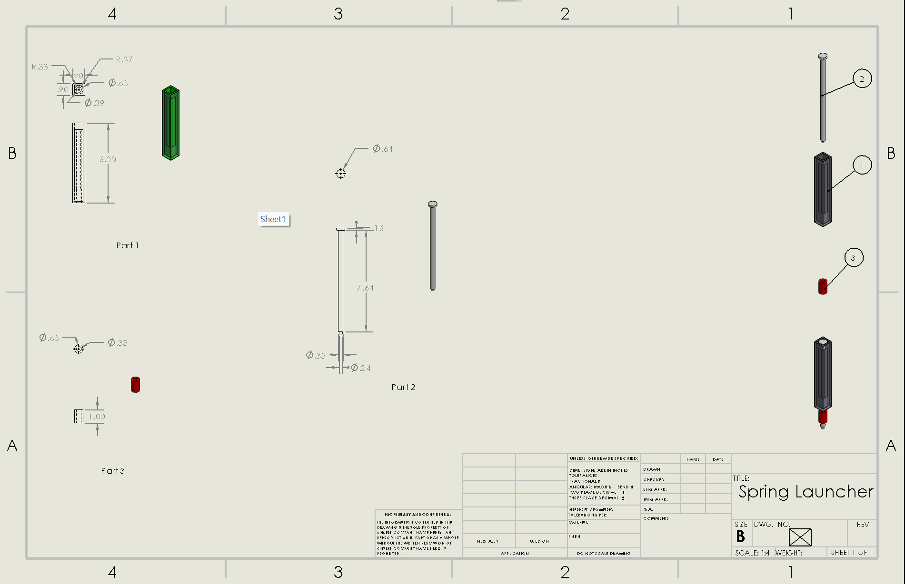
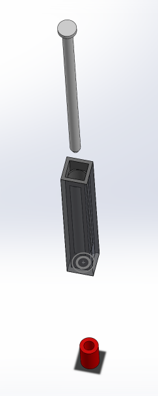
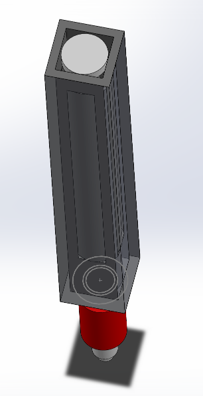
Designing for kids forces clarity. If a 4th grader can't figure out what to do in the first ten seconds, the engineering doesn't matter. Most of the late-stage iteration was about removing friction from the play experience, not adding more features — for example, we found that accidental light changes from fingers hovering over photoresistors disrupted gameplay, which taught me how much sensor placement and threshold tuning matter in a real user environment.
On the team side, this was my first real exposure to running monthly design reviews — preparing the work, taking critique, deciding what to act on, and moving forward. That cadence has carried over into how I work in AerospaceNU now. I also learned the full weight of documentation: maintaining the design notebook wasn't just busywork, it was how we communicated progress across milestones and justified decisions to reviewers.
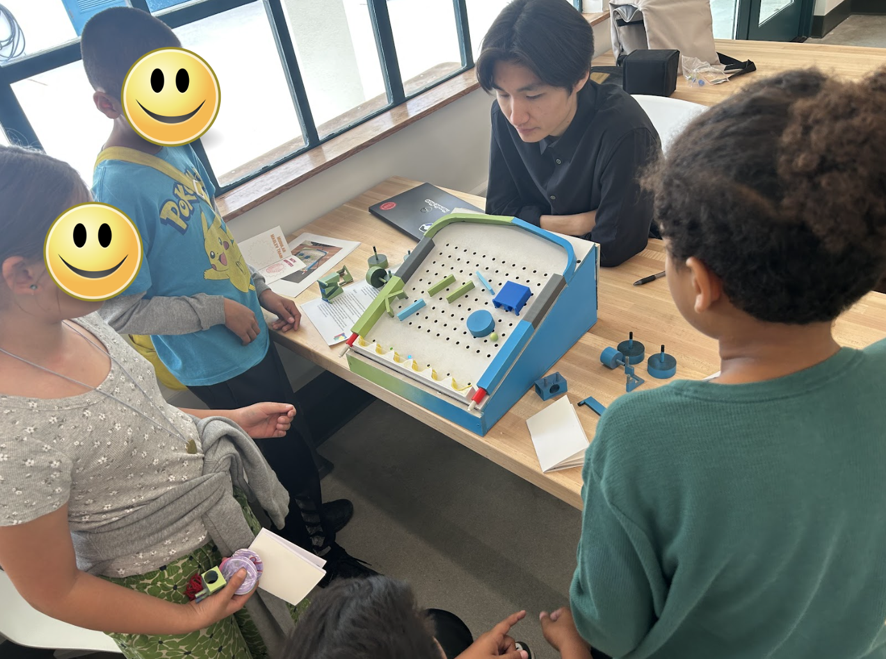